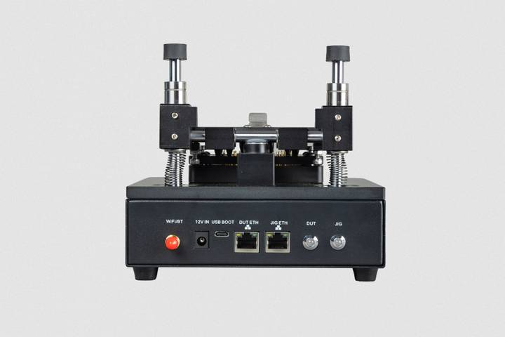

This section describes the physical characteristics and capabilities of the Compute Module 5 Programming Jig, including specifications, features, and hardware.
| Specification | Description |
|---|---|
| Compatible devices | |
| Provisioning capacity | Single-device provisioning; the jig configures one CM5 at a time |
| Jig network interface (JIG ETH) | Ethernet (10/100/1000) or Wi-Fi (2.4 GHz and 5.0 GHz IEEE 802.11 b/g/n/ac). |
| CM5 network interface (DUT ETH) | Ethernet (10/100/1000) |
| Dimensions (including antenna) | 170 × 181.5 × 153 mm |
| Weight | 1800 g |
secure-boot), encrypted storage and device-unique keys (fde-only), and OS-only (naked). For more information, see Levels of security.Don't touch the pogo pins because they're sharp and can carry charge; you might damage the pins, the jig, or yourself. Tighten the screws as appropriate for your situation.
The Compute Module 5 Programming Jig box contains the following parts:
During usage, you interact with the Compute Module 5 Programming Jig connectors and module bay. There's also a safety button that you don't interact with directly.

Figure 1. The connectors on the back of the CM5 Programming Jig
The back of the Compute Module 5 Programming Jig provides the following external connectors:
| Label | Description |
|---|---|
| WiFI/BT | The attachment point for the included antenna. |
| 12 V IN | A barrel power jack that accepts 12 V at 2 A (24 W) DC input from the supplied power supply. |
| USB BOOT | A USB-C port used to connect your jig to a computer when using |
| JIG ETH | An RJ45 Ethernet port for connecting the jig to the provisioning network for configuration, management, and software updates. |
| DUT ETH | An RJ45 Ethernet port for connecting an inserted CM5 to the provisioning network for accelerated data transfer during provisioning. |
As an alternative to the JIG ETH port, you can connect the jig to the provisioning network wirelessly using Wi-Fi.
The module bay on top of the Compute Module 5 Programming Jig holds the CM5 that's being programmed.
The CM5 fits snugly within the module bay with the
An unmarked safety button is located on top of the jig, at the back of the module bay. The provisioning software uses this button to detect when the jig is closed. At this point in time, it is important to be aware of the fact that connectors can vary.
Don't manually press this button because doing so can interrupt a provisioning operation.